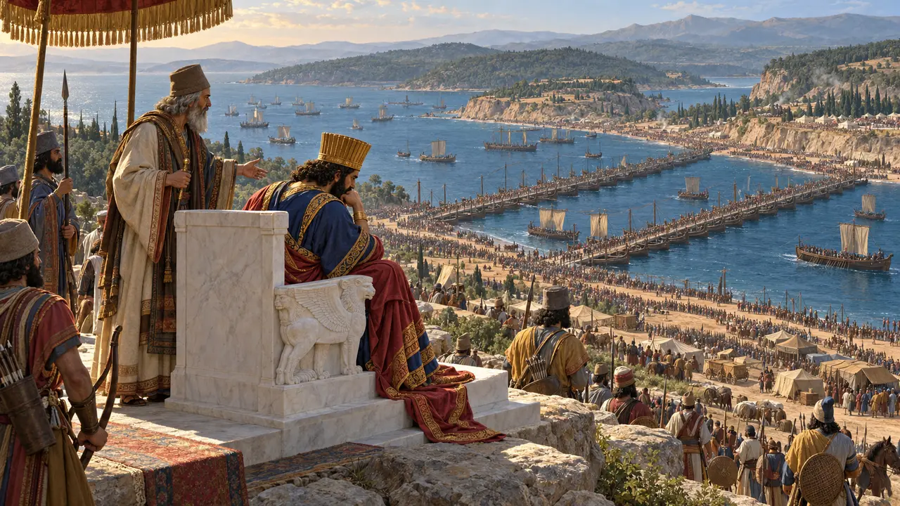
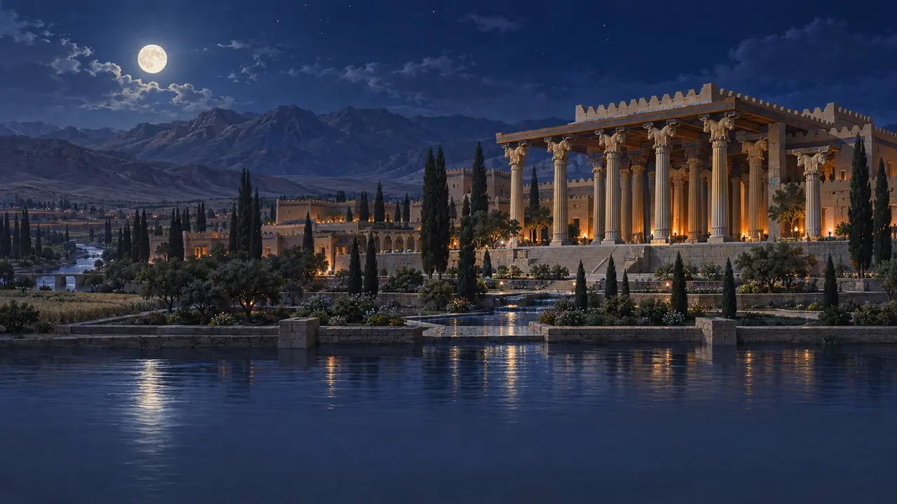
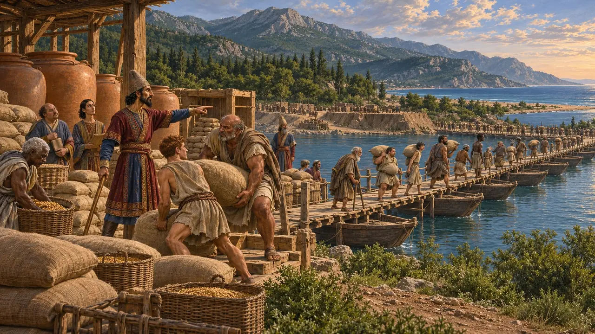
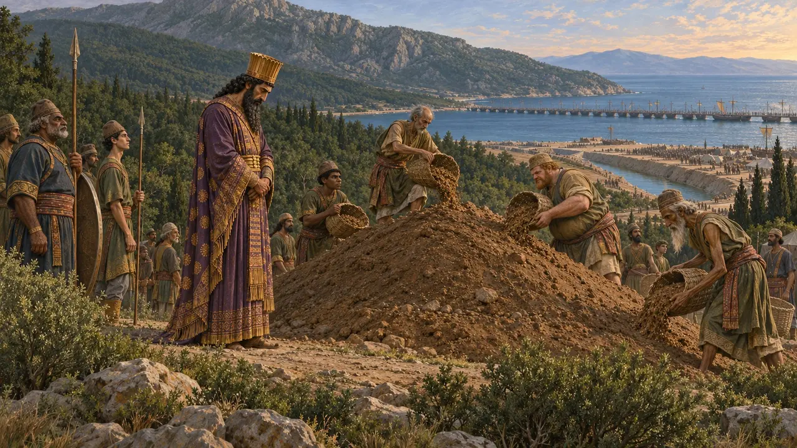
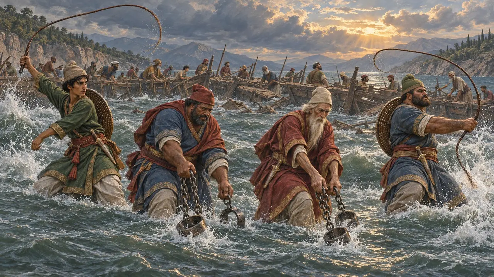
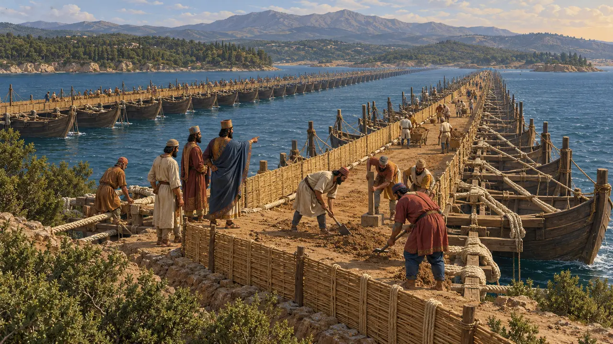
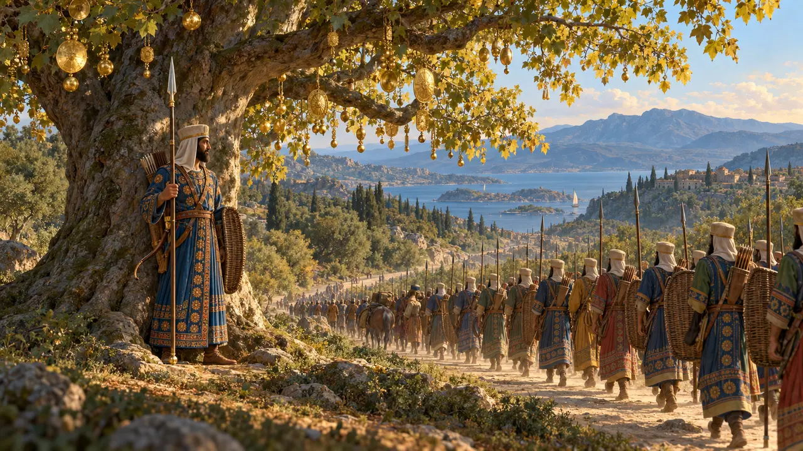

Level 9: Der Kanal · Athos · 483–480 v. Chr.
Der Kanal
Xerxes sieht zu, wie sein Heer bei Abydos übersetzt, Frühling 480 v. Chr.
Enzyklopädie › Die Geschichte
Nach Marathon plante Dareios einen größeren Krieg, doch Ägypten erhob sich, und er starb 486 v. Chr. Xerxes griff den Plan auf. Drei Jahre lang gruben seine Männer einen Kanal durch die Landenge am Berg Athos, wo einst eine Flotte zerschellt war, und überbrückten den Hellespont.
- 492 BCE Schiffbruch vor dem Athos
- 486 BCE Dareios stirbt
- 484 BCE Ägypten zurückerobert
- 483 BCE Baubeginn am Kanal
- 481 BCE Brücken zerstört
- 480 v. Chr. Der Übergang


Die Bryger bei Nacht
Antiker BerichtAuf demselben Marsch im Jahr 492 v. Chr. überfielen die Bryger, ein thrakisches Volk, nachts das Lager des Mardonios, töteten viele seiner Männer und verwundeten ihn selbst. Er wollte das Land nicht verlassen, bevor er sie unterworfen hatte. Von Kämpfen am Kanal selbst berichtet Herodot nichts.
Im Spiel: Die große Schlacht des Levels ist der nächtliche Überfall der Bryger, verlegt auf das Gelände des Kanals.
Herodotus 6.45

Die Brücken über den Strymon
Antiker BerichtDie Männer, die den Kanal gruben, sollten auch den Fluss Strymon überbrücken, wo bei Eion Getreide eingelagert war. Der König der Bisalter, eines thrakischen Volkes am Fluss, wollte Xerxes nicht dienen und floh in das Rhodopegebirge. Als seine sechs Söhne dennoch mit dem König zogen, ließ er ihnen nach ihrer Rückkehr die Augen ausstechen.
Im Spiel: Der Überfall der Bisalter auf die Brückenbaustelle ist eine dramatische Ausschmückung.
Herodotus 7.24-25, 8.116

Der Kanal
Zeitgenössisch belegtLaut Herodot war der Kanal so breit, dass zwei Trieren nebeneinander hindurchgerudert werden konnten, und nur die Phönizier gruben seine Wände schräg, sodass sie nicht einstürzten. Untersuchungen seit den 1990er-Jahren haben seinen etwa zwei Kilometer langen Verlauf unter den Feldern nachgewiesen.
Im Spiel: Der Kanal ist das große Bauwerk des Levels.
Herodotus 7.22-24; B. Isserlin and others, Annual of the British School at Athens (1994-2003)

Artachaies
Antiker BerichtDer Aufseher des Kanals, Artachaies, war laut Herodot der größte Mann im Heer und hatte die lauteste Stimme. Er starb in Akanthos, und die Griechen der Stadt verehrten ihn als Heros.
Herodotus 7.117
Lager an der Straße
Antiker BerichtDie Verpflegung für den Marsch wurde im Voraus in Lagern entlang der thrakischen Küste angelegt: am Weißen Vorgebirge, in Tyrodiza, Doriskos, Eion und in Makedonien.
Im Spiel: Nachschublager an der Straße des Königs füllen sich mit Gerste für das Heer.
Herodotus 7.25

Das gepeitschte Meer
UmstrittenEin Sturm zerstörte die ersten Brücken. Laut Herodot ließ Xerxes dem Hellespont dreihundert Peitschenhiebe geben, Fesseln hineinwerfen und die Erbauer enthaupten. Herodot erzählt dies als Beispiel für Hochmut; manche Historiker sehen darin die rituelle Bestrafung eines Flusses.
Herodotus 7.34-35

Die neuen Brücken
Antiker BerichtZwei neue Brücken wurden auf 360 und 314 Schiffen errichtet, gehalten von Tauen aus Flachs und Papyrus, dann mit Planken und Erde belegt und mit Sichtwänden versehen, damit die Pferde das Meer nicht sahen.
Herodotus 7.36
Abydos
Antiker BerichtVon einem Thron aus weißem Marmor bei Abydos sah Xerxes, wie sein Heer und seine Flotte Ufer und Meer füllten, und weinte: In hundert Jahren würde keiner von ihnen mehr leben. Herodot lässt ihn ein langes Gespräch mit seinem Onkel Artabanos führen.
Herodotus 7.44-52

Die Platane
Antiker BerichtAuf dem Marsch durch Lydien fand Xerxes eine so schöne Platane, dass er sie mit Gold schmückte und einen seiner Unsterblichen als Wächter zurückließ.
Im Spiel: Here the Plane Tree is Xerxes' own, hung with gold, its guard's spear and shield at its foot.
Herodotus 7.31
Read next: the topics of Der Kanal
Schlachten und Ereignisse
Der Feldzug des Mardonios und der Schiffbruch vor dem Athos · Der Bau des Athos-Kanals · Die Brücken des Xerxes über den Hellespont · Die Überquerung des Hellespont
Gebäude
Platane · Flachsfeld · Reeperbahn · Xerxes-Kanal · Königliche Münzstätte · Nachschublager
Soldaten und Schiffe
Bevölkerung
Völker
Orte
Der Hellespont · Athos · Marathon · Abydos · Doriskos · Eion und der Strymon · Egypt · Akanthos
Tierwelt und Wetter
Hirsche · Das Wildschwein · Der Weißstorch · Der Hase · Der Fuchs · Der Wolf · Der Löwe · Wildenten · Der Auerochse · Der Milan · Der Gänsegeier · Die Felsentaube · Die Dohle · Der Kranich · Die Schwalbe · Möwen · Fledermäuse · Der Steinkauz · Die Nebelkrähe · Morgennebel